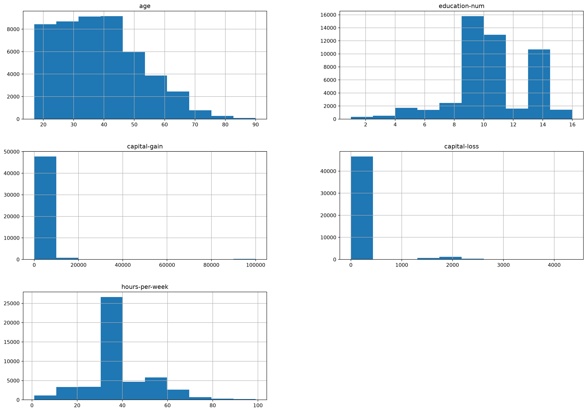
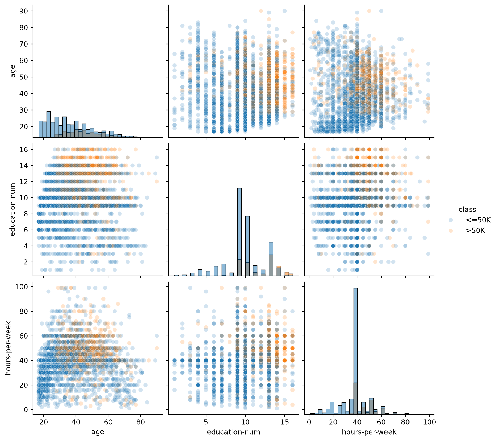
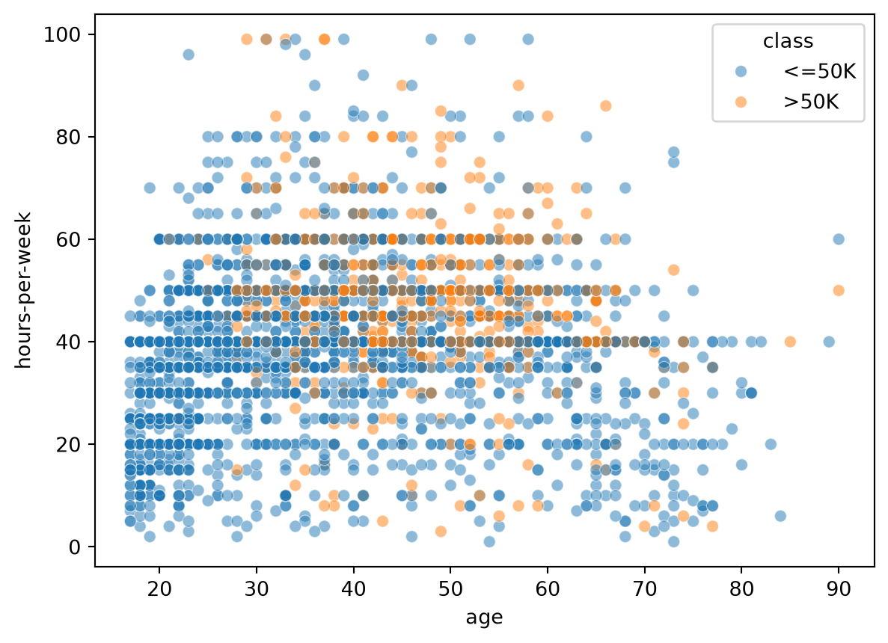
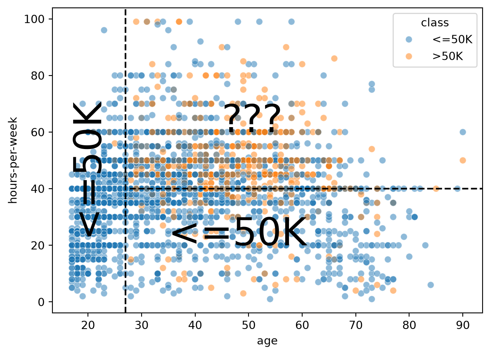

import pandas as pd
adult_census = pd.read_csv("../data/adult-census.csv")19 Lesson 7a: Data Exploration
In this lesson, we will look at the necessary steps required before any machine learning takes place, which involves:
- loading the data;
- looking at the variables in the dataset, in particular, differentiate between numerical and categorical variables, which need different preprocessing in most machine learning workflows;
- visualizing the distribution of the variables to gain some insights into the dataset.
Although this stage can take significant time, this notebook will just provide a small sampling of considerations we should make prior to modeling.
19.1 Learning objectives
By the end of this lesson you’ll be able to:
- Differentiate between numerical and categorical variables within your dataset.
- Perform visual inspection of your variables and their distributions.
19.2 Loading the adult census dataset
We will use data from the 1994 US census that we downloaded from OpenML.
You can look at the OpenML webpage to learn more about this dataset: http://www.openml.org/d/1590
The dataset is available as a CSV (Comma-Separated Values) file and we will use pandas to read it.
The goal with this data is to predict whether a person earns over 50K a year
based on heterogeneous data such as age, employment, education, family
information, etc.19.3 Response variable
The column named class is our target variable (i.e., the variable which we want to predict).
The two possible classes are <=50K (low-revenue) and >50K (high-revenue).
Consequently, this is called a binary classification problem.
target_column = 'class'
adult_census[target_column].value_counts()class
<=50K 37155
>50K 11687
Name: count, dtype: int64Classes are slightly imbalanced, meaning there are more samples of one or
more classes compared to others. Class imbalance happens often in practice
and may need special techniques when building a predictive model.19.4 Features
The other columns represent pieces of information (aka “features”) that may be useful in predicting the response variable.
In the field of machine learning and descriptive statistics, commonly used equivalent terms are “variable”, “attribute”, or “covariate”.
features = adult_census.drop(columns='class')
features.head()| age | workclass | education | education-num | marital-status | occupation | relationship | race | sex | capital-gain | capital-loss | hours-per-week | native-country | |
|---|---|---|---|---|---|---|---|---|---|---|---|---|---|
| 0 | 25 | Private | 11th | 7 | Never-married | Machine-op-inspct | Own-child | Black | Male | 0 | 0 | 40 | United-States |
| 1 | 38 | Private | HS-grad | 9 | Married-civ-spouse | Farming-fishing | Husband | White | Male | 0 | 0 | 50 | United-States |
| 2 | 28 | Local-gov | Assoc-acdm | 12 | Married-civ-spouse | Protective-serv | Husband | White | Male | 0 | 0 | 40 | United-States |
| 3 | 44 | Private | Some-college | 10 | Married-civ-spouse | Machine-op-inspct | Husband | Black | Male | 7688 | 0 | 40 | United-States |
| 4 | 18 | ? | Some-college | 10 | Never-married | ? | Own-child | White | Female | 0 | 0 | 30 | United-States |
import numpy as np
numeric_columns = features.select_dtypes(include=np.number).columns.values
categorical_columns = features.drop(columns=numeric_columns).columns.values
print(f'''
There are {features.shape[0]} observations and {features.shape[1]} features.
Numeric features: {', '.join(numeric_columns)}.
Categorical features: {', '.join(categorical_columns)}.
''')
There are 48842 observations and 13 features.
Numeric features: age, education-num, capital-gain, capital-loss, hours-per-week.
Categorical features: workclass, education, marital-status, occupation, relationship, race, sex, native-country.
19.5 Visual inspection of the data
Before building a predictive model, it is a good idea to look at the data:
- maybe the task you are trying to achieve can be solved without machine learning;
- you need to check that the information you need for your task is actually present in the dataset;
- inspecting the data is a good way to find peculiarities. These can arise during data collection (for example, malfunctioning sensor or missing values), or from the way the data is processed afterwards (for example capped values);
- we may identify feature engineering tasks that could improve modeling performance.
Let’s look at the distribution of individual features, to get some insights about the data. We can start by plotting histograms, note that this only works for features containing numerical values:
adult_census.hist(figsize=(20, 14));
We can already make a few comments about some of the variables:
age: there are not that many points forage > 70. The dataset description does indicate that retired people have been filtered out (hours-per-week > 0);education-num: peak at 10 and 13, hard to tell what it corresponds to without looking much further. We’ll do that later in this notebook;hours-per-weekpeaks at 40, this was very likely the standard number of working hours at the time of the data collection;- most values of
capital-gainandcapital-lossare close to zero.
For categorical variables, we can look at the distribution of values:
adult_census['sex'].value_counts()sex
Male 32650
Female 16192
Name: count, dtype: int64Note that there is an important imbalance on the data collection concerning the number of male/female samples. Be aware that any kind of data imbalance will impact the generalizability of a model trained on it. Moreover, it can lead to fairness problems if used naively when deploying a real life setting.
We recommend our readers to refer to fairlearn.org for resources on how to quantify and potentially mitigate fairness issues related to the deployment of automated decision making systems that relying on machine learning components.
adult_census['education'].value_counts()education
HS-grad 15784
Some-college 10878
Bachelors 8025
Masters 2657
Assoc-voc 2061
11th 1812
Assoc-acdm 1601
10th 1389
7th-8th 955
Prof-school 834
9th 756
12th 657
Doctorate 594
5th-6th 509
1st-4th 247
Preschool 83
Name: count, dtype: int64sygfvbmfukbz Question: :class: attention What do you think the difference is between `education` and `education-num`?
Let’s look at the relationship between education and education-num.
pd.crosstab(
index=adult_census['education'],
columns=adult_census['education-num']
)| education-num | 1 | 2 | 3 | 4 | 5 | 6 | 7 | 8 | 9 | 10 | 11 | 12 | 13 | 14 | 15 | 16 |
|---|---|---|---|---|---|---|---|---|---|---|---|---|---|---|---|---|
| education | ||||||||||||||||
| 10th | 0 | 0 | 0 | 0 | 0 | 1389 | 0 | 0 | 0 | 0 | 0 | 0 | 0 | 0 | 0 | 0 |
| 11th | 0 | 0 | 0 | 0 | 0 | 0 | 1812 | 0 | 0 | 0 | 0 | 0 | 0 | 0 | 0 | 0 |
| 12th | 0 | 0 | 0 | 0 | 0 | 0 | 0 | 657 | 0 | 0 | 0 | 0 | 0 | 0 | 0 | 0 |
| 1st-4th | 0 | 247 | 0 | 0 | 0 | 0 | 0 | 0 | 0 | 0 | 0 | 0 | 0 | 0 | 0 | 0 |
| 5th-6th | 0 | 0 | 509 | 0 | 0 | 0 | 0 | 0 | 0 | 0 | 0 | 0 | 0 | 0 | 0 | 0 |
| 7th-8th | 0 | 0 | 0 | 955 | 0 | 0 | 0 | 0 | 0 | 0 | 0 | 0 | 0 | 0 | 0 | 0 |
| 9th | 0 | 0 | 0 | 0 | 756 | 0 | 0 | 0 | 0 | 0 | 0 | 0 | 0 | 0 | 0 | 0 |
| Assoc-acdm | 0 | 0 | 0 | 0 | 0 | 0 | 0 | 0 | 0 | 0 | 0 | 1601 | 0 | 0 | 0 | 0 |
| Assoc-voc | 0 | 0 | 0 | 0 | 0 | 0 | 0 | 0 | 0 | 0 | 2061 | 0 | 0 | 0 | 0 | 0 |
| Bachelors | 0 | 0 | 0 | 0 | 0 | 0 | 0 | 0 | 0 | 0 | 0 | 0 | 8025 | 0 | 0 | 0 |
| Doctorate | 0 | 0 | 0 | 0 | 0 | 0 | 0 | 0 | 0 | 0 | 0 | 0 | 0 | 0 | 0 | 594 |
| HS-grad | 0 | 0 | 0 | 0 | 0 | 0 | 0 | 0 | 15784 | 0 | 0 | 0 | 0 | 0 | 0 | 0 |
| Masters | 0 | 0 | 0 | 0 | 0 | 0 | 0 | 0 | 0 | 0 | 0 | 0 | 0 | 2657 | 0 | 0 |
| Preschool | 83 | 0 | 0 | 0 | 0 | 0 | 0 | 0 | 0 | 0 | 0 | 0 | 0 | 0 | 0 | 0 |
| Prof-school | 0 | 0 | 0 | 0 | 0 | 0 | 0 | 0 | 0 | 0 | 0 | 0 | 0 | 0 | 834 | 0 |
| Some-college | 0 | 0 | 0 | 0 | 0 | 0 | 0 | 0 | 0 | 10878 | 0 | 0 | 0 | 0 | 0 | 0 |
This shows that education and education-num give you the same information. For example, education-num=2 is equivalent to education='1st-4th'. In practice that means we can remove education-num without losing information.
Having redundant (or highly correlated) columns can be a problem for machine learning algorithms. In the upcoming notebooks, we will only keep the `education` variable, excluding the `education-num` variable since the latter is redundant with the former.We can measure the actual correlation across our numeric features using the .corr() method. Highly correlated variables is something to keep an eye on as they can cause problems in certain machine learning algorithms. However, in this data the numeric features have low correlation.
corr = adult_census[numeric_columns].corr()
corr.style.background_gradient(cmap='coolwarm')| age | education-num | capital-gain | capital-loss | hours-per-week | |
|---|---|---|---|---|---|
| age | 1.000000 | 0.030940 | 0.077229 | 0.056944 | 0.071558 |
| education-num | 0.030940 | 1.000000 | 0.125146 | 0.080972 | 0.143689 |
| capital-gain | 0.077229 | 0.125146 | 1.000000 | -0.031441 | 0.082157 |
| capital-loss | 0.056944 | 0.080972 | -0.031441 | 1.000000 | 0.054467 |
| hours-per-week | 0.071558 | 0.143689 | 0.082157 | 0.054467 | 1.000000 |
Another way to inspect the data is to do a pairplot and show how each variable differs according to our target, i.e. class. Plots along the diagonal show the distribution of individual variables for each class. The plots on the off-diagonal can reveal interesting interactions between variables.
import seaborn as sns
# We will plot a subset of the data to keep the plot readable and make the
# plotting faster
n_samples_to_plot = 5000
columns = ['age', 'education-num', 'hours-per-week']
sns.pairplot(data=adult_census[:n_samples_to_plot], vars=columns,
hue=target_column, plot_kws={'alpha': 0.2},
height=3, diag_kind='hist', diag_kws={'bins': 30});
19.6 Creating decision rules by hand
By looking at the previous plots, we could create some hand-written rules that predicts whether someone has a high- or low-income.
sygfvbmfukbz Question: :class: attention Looking at the prior pairplot, what type of decision rules would you suggest?
For instance, we could focus on the combination of the hours-per-week and age features.
sns.scatterplot(
x="age",
y="hours-per-week",
data=adult_census[:n_samples_to_plot],
hue=target_column,
alpha=0.5,
);
The data points (circles) show the distribution of hours-per-week and age in the dataset. Blue points mean low-income and orange points mean high-income. This part of the plot is the same as the bottom-left plot in the pairplot above.
In this plot, we can try to find regions that mainly contains a single class such that we can easily decide what class one should predict. We could come up with hand-written rules as shown in this plot:
import matplotlib.pyplot as plt
ax = sns.scatterplot(
x="age", y="hours-per-week", data=adult_census[:n_samples_to_plot],
hue="class", alpha=0.5,
)
age_limit = 27
plt.axvline(x=age_limit, ymin=0, ymax=1, color="black", linestyle="--")
hours_per_week_limit = 40
plt.axhline(
y=hours_per_week_limit, xmin=0.18, xmax=1, color="black", linestyle="--"
)
plt.annotate("<=50K", (17, 25), rotation=90, fontsize=35)
plt.annotate("<=50K", (35, 20), fontsize=35)
plt.annotate("???", (45, 60), fontsize=35);
- In the region
age < 27(left region) the prediction is low-income. Indeed, there are many blue points and we cannot see any orange points. - In the region
age > 27 AND hours-per-week < 40(bottom-right region), the prediction is low-income. Indeed, there are many blue points and only a few orange points. - In the region
age > 27 AND hours-per-week > 40(top-right region), we see a mix of blue points and orange points. It seems complicated to chose which class we should predict in this region.
19.7 Unbiased decision rules
It is interesting to note that some machine learning models (i.e. decision trees) will work similarly to what we did. However, ML models chose the “best” decision rules based on the data without human intervention or inspection.
ML models are extremely helpful when creating rules by hand is not straightforward, for example because we are in high dimension (many features) or because there are no simple and obvious rules that separate the two classes as in the top-right region of the previous plot.
To sum up, the important thing to remember is that in a machine-learning setting, a model automatically creates the “rules” from the data in order to make predictions on new unseen data. And this is where we’ll turn our attention to in future lessons.
19.8 Exercises
```sygfvbmfukbz Questions: Using the ames_clean.csv data:
- Assess the distribution of the response variable (
SalePrice) - How many features are numeric vs. categorical?
- Pick a numeric feature that you believe would be influential on a home’s
SalePrice. Assess the distribution of the numeric feature. Assess the relationship between that feature and theSalePrice. - Pick a categorical feature that you believe would be influential on a home’s
SalePrice. Assess the distribution of the categorical feature. Assess the relationship between that feature and theSalePrice.
## Computing environment
::: {#349fc686 .cell execution_count=13}
``` {.python .cell-code}
%load_ext watermark
%watermark -v -p jupyterlab,pandas,numpy,seaborn,matplotlibPython implementation: CPython
Python version : 3.12.13
IPython version : 9.15.0
jupyterlab: 4.6.1
pandas : 3.0.3
numpy : 2.5.1
seaborn : 0.13.2
matplotlib: 3.11.0
:::